Review · Round 6 · the chapters · the whole film
Chapter 2: The Outsiders, the draft
The latest draft, acted and painted, 5:13 at 12 drawings a second, over the same sound as the storyboard. Space is one set, with the camera following the fleet, the transport and the investigators; the Outsider ship is another, tracked along from its broken hull to its power room. After the scene break, the second ship is the same set, darker.
Notes: pause anywhere, type, and press Enter (or Pin) to pin a note to that moment. They stay in this browser. Copy notes puts them on the clipboard as text, timed and with their shot, for the decision sheet or a message.
Notes
The shots
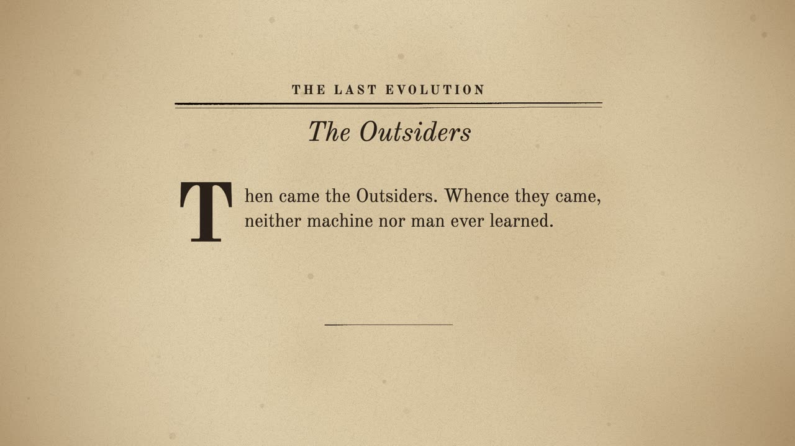
A The chapter's page 0:00–0:06
seenThe pulp page, The Outsiders, the opening words under a drop cap.
cameraa slow push
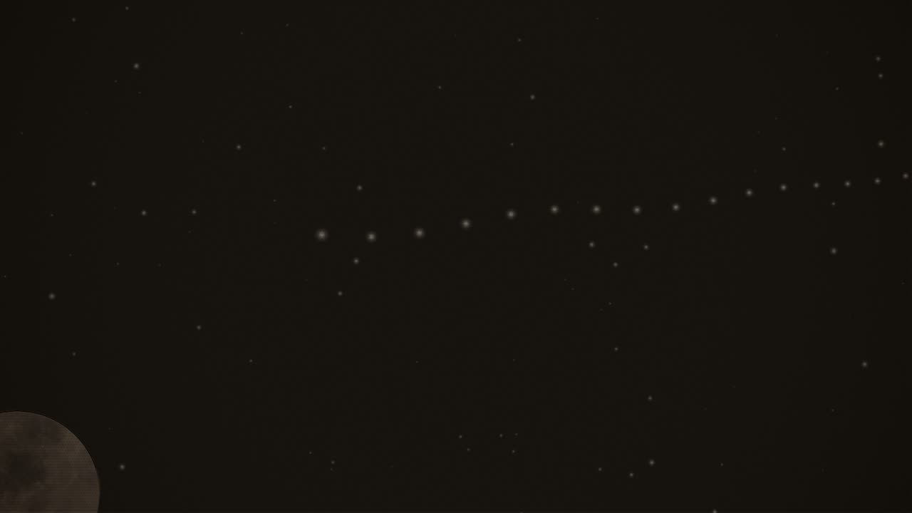
B From beyond the outermost planet 0:06–0:28
seenThe cold dark beyond the last planet, a dim far sun; a thin line of points of light coming in from it.
cameraa slow push toward the line
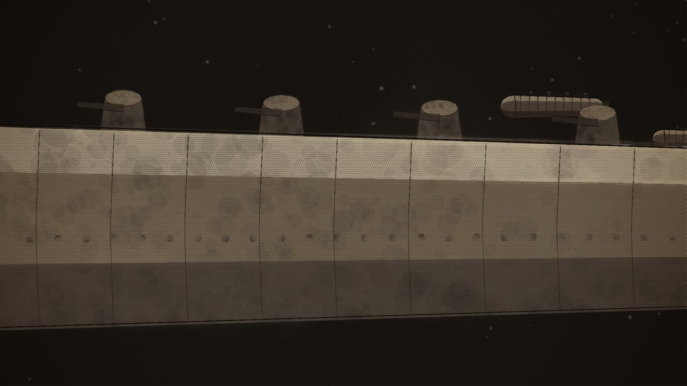
C Torpedoes of the void 0:28–0:36
seenThe ships close: long hulls of riveted plates, blunt noses, turrets along their spines, sliding past.
cameraholds as the hull slides through
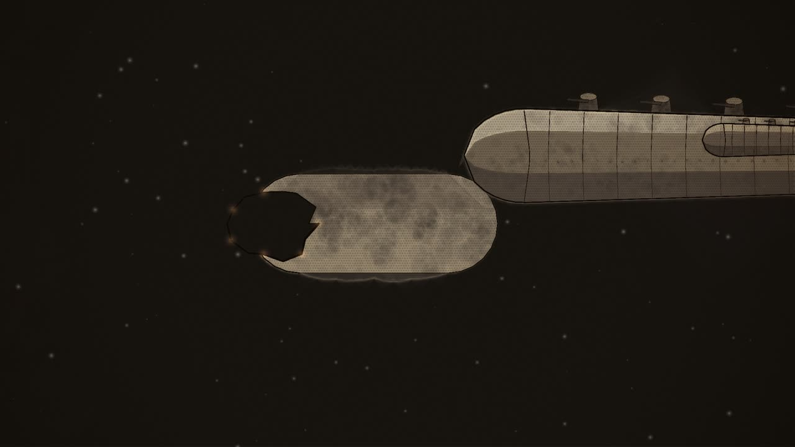
D The transport 0:36–0:54
seenA transport machine, a long capsule of the machines' family, on its way from Mars to Earth; a thin ruled line of its thought runs back toward Earth.
cameradrifts alongside the transport
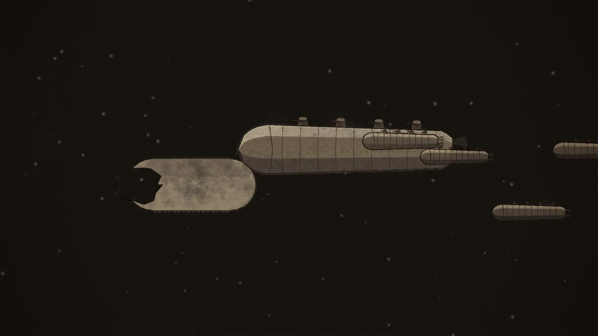
E From Deimos 0:54–1:14
seenMars's little moon; a fleck of light streaking from it; then ten ships, one grappling the dead transport, its fore-section blasted away.
camerawhips with the fleck, then settles on the grappled transport
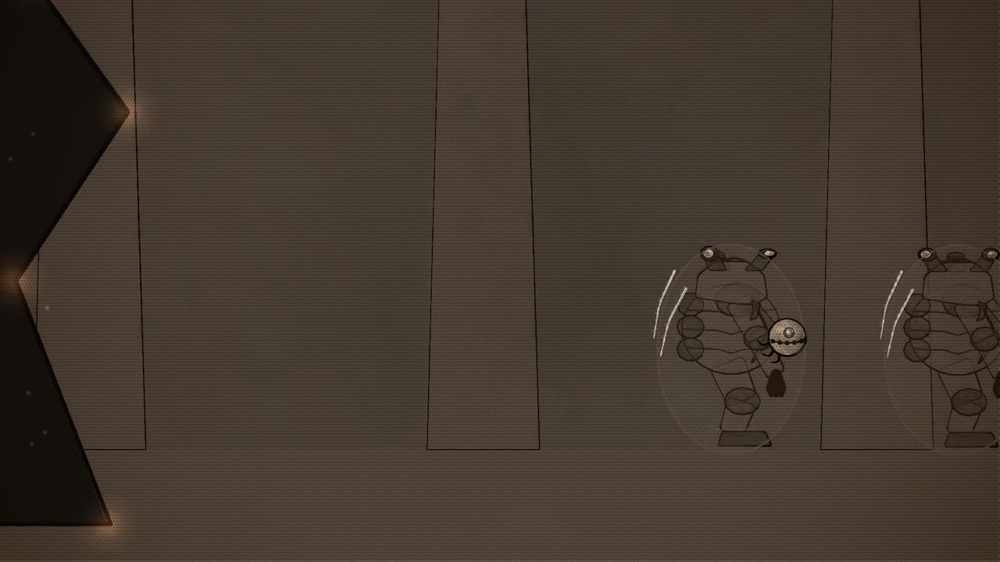
F Into the hull 1:14–1:28
seenInside the broken hull, the torn plates still glowing at their edges; the investigator, a polished sphere three inches across, creeping in.
cameratracks with the investigator, close
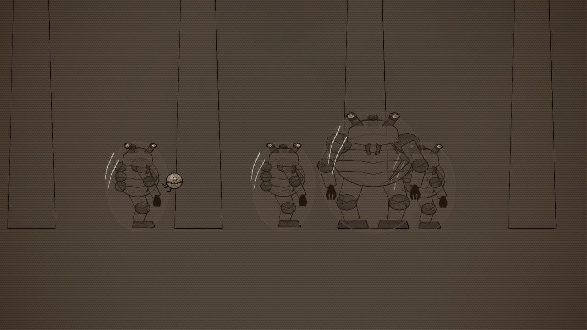
G The Outsiders 1:28–2:08
seenSquat, armoured beings in transparent suits, crawling about the hull; one close, its horny brown coat and three eyes.
camerapushes in on one of them
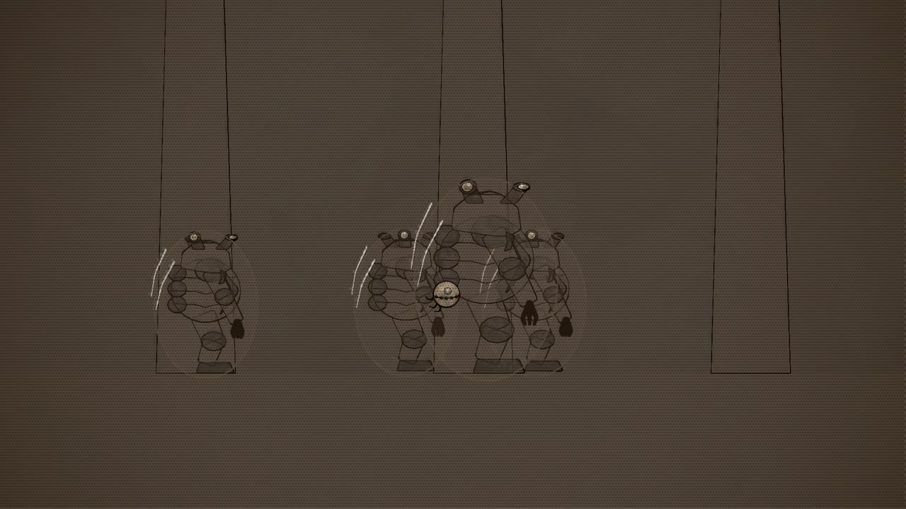
H The blow 2:08–2:30
seenThe investigator, an Outsider before it.
camerawhips with the blow, then holds as he tumbles
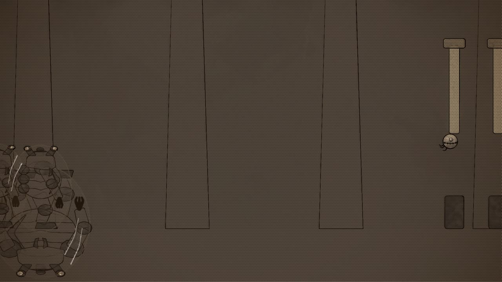
I Ahead of them 2:30–2:40
seenThe investigator darting along the hull toward the stern, the Outsiders clustering behind round their companion.
cameratracks fast toward the stern
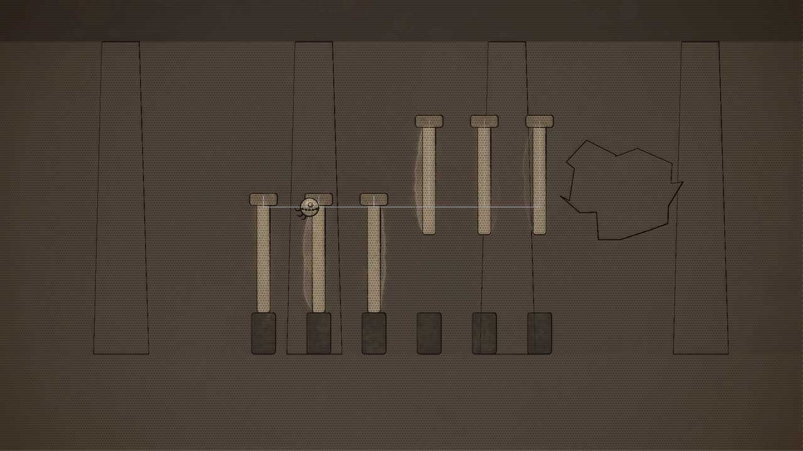
J The power room 2:40–3:19
seenThe power room: great plungers standing over their sockets; the ship-brain's dome shattered; the investigator among the controls.
cameraholds on the plungers, a push on the last
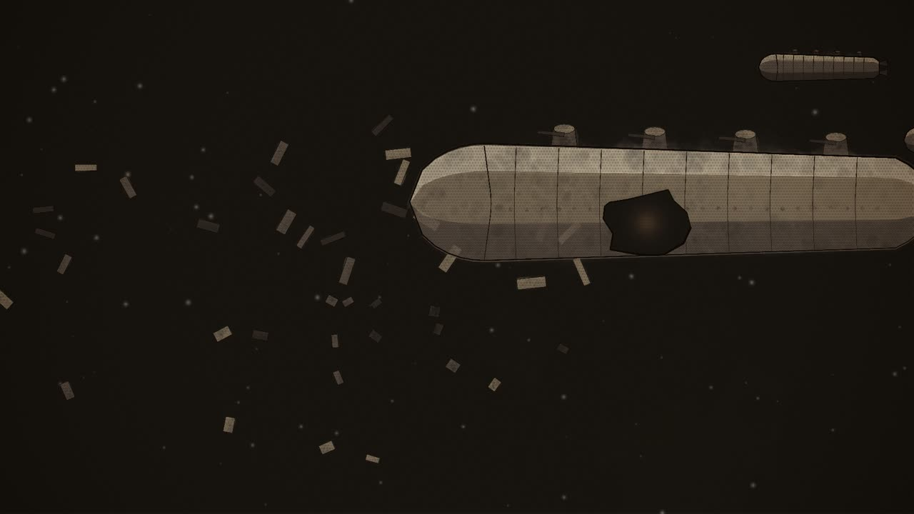
K The second investigator 3:19–3:35
seenWhere the transport was, a spreading cloud of wreckage; the nearest Outsider ship holed in its side; a second fleck arriving.
camerapulls back from the wreck to the holed ship, then follows the fleck in
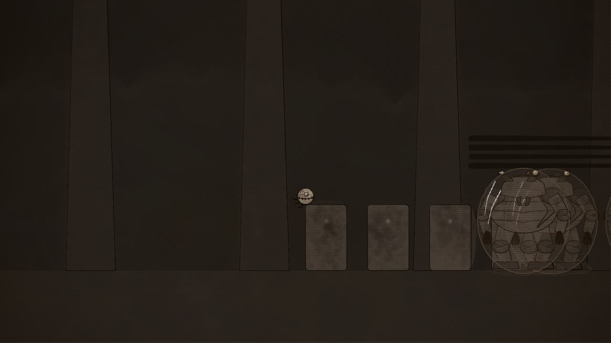
L Corridors 3:35–3:58
seenThe second ship's corridors, darker; the apparatus room, with few and simple machines.
cameraraces along the corridor, then slows in the room
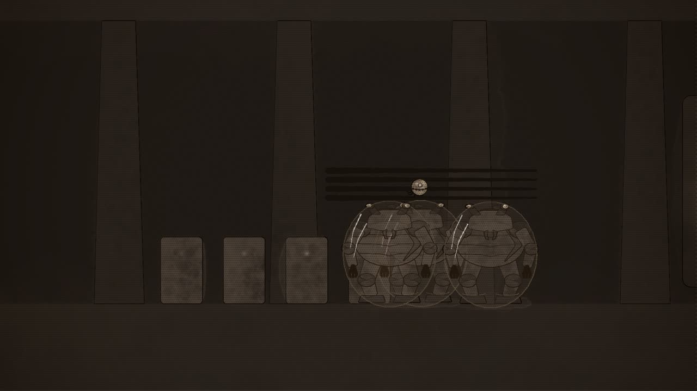
M Searching 3:58–4:36
seenOutsiders hurrying, searching; the investigator hidden among pipes; behind it, the ship's heart, a chamber where a block of matter dissolves into light.
camerapans from the searchers to the heart of the ship
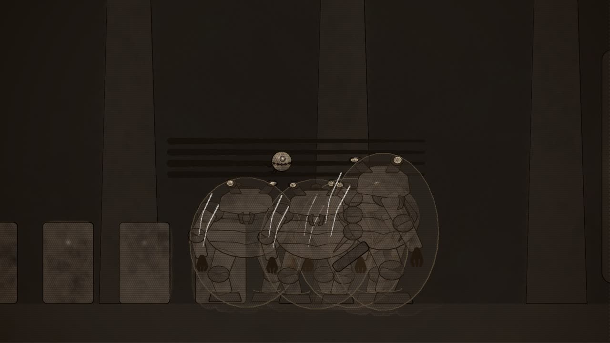
N The bluish beam 4:36–4:52
seenAn Outsider with a peculiar projector, the investigator found.
cameraclose on the projector, then on the investigator
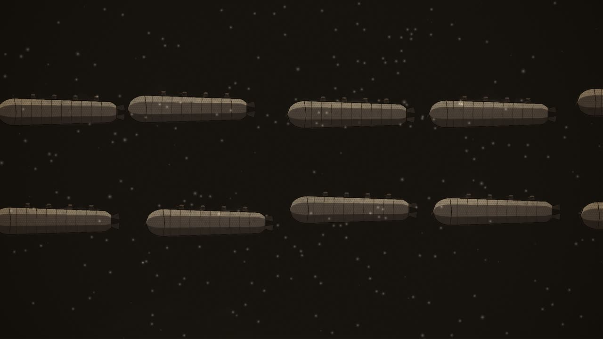
O Thousands 4:52–5:13
seenThe fleet, surrounded by thousands of tiny flecks of light.
camerapulls back to take in the fleet and the swarm